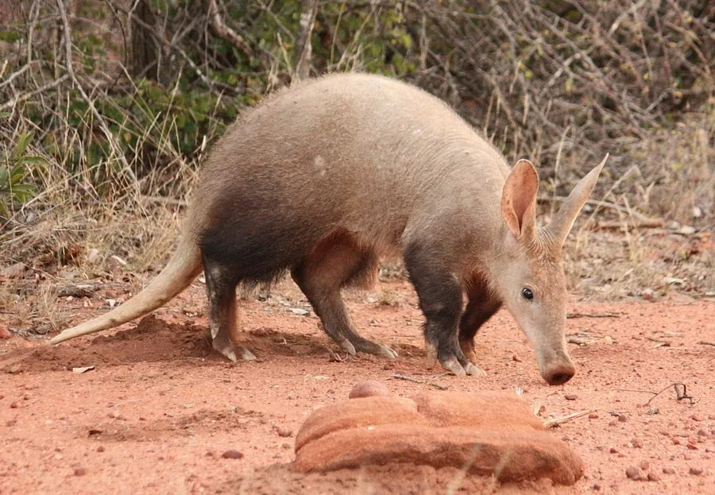

哺乳动物 · 动物界
土豚 Orycteropus afer

撒哈拉以南非洲的夜行性哺乳动物，吻部像猪、耳朵像兔、尾巴像袋鼠，专吃蚂蚁和白蚁，是管齿目唯一现存代表。
- 分类
- 门脊索动物门纲哺乳纲目管齿目科土豚科属土豚属
- 栖息环境
- 撒哈拉以南非洲的稀树草原、灌丛与雨林边缘
- 地理分布
- 撒哈拉以南的非洲大陆，从塞内加尔到埃塞俄比亚和南非
- 保护级别
- IUCN 无危（LC）；非中国分布物种
物种志
土豚体长 1.0–1.3 米，尾长 0.5–0.7 米，体重 40–65 kg，雄性略大。它皮肤厚而呈粉灰色，体毛稀疏；吻部细长呈管状，鼻孔有毛可以闭合，耳朵长而直立，前肢有四趾、后肢有五趾，前爪粗壮如铲，适合挖掘。
土豚分布于撒哈拉以南非洲的稀树草原、灌丛和雨林边缘，单独在夜间活动，白天躲在自挖的洞穴中。它靠敏锐的嗅觉和听觉寻找蚂蚁和白蚁，用强壮的前爪扒开蚁丘，再用长而黏的舌头卷食，一夜可吃掉数万只蚂蚁和白蚁。土豚会不断更换洞穴，废弃的洞穴常被其他动物利用。雌性妊娠期约 7 个月，每胎 1 仔，寿命约 10–23 年。目前种群总体稳定，被列为无危。
形态与习性
- 食性蚂蚁与白蚁
- 体长1.0–1.3 m，尾长 0.5–0.7 m
- 体重40–65 kg
- 寿命约 10–23 年
- 繁殖妊娠期约 7 个月，每胎 1 仔
- 四肢前肢四趾、后肢五趾，前爪如铲
趣味知识
- 土豚是管齿目唯一现存的代表物种。
- 它一夜能吃掉数万只蚂蚁和白蚁。
- 土豚的洞穴常被蛇、疣猪等其他动物二次利用。